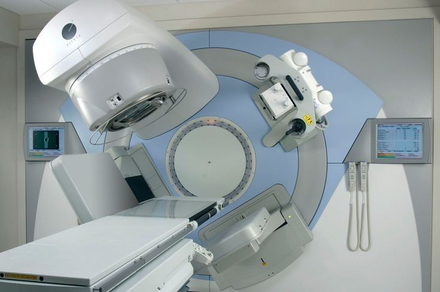
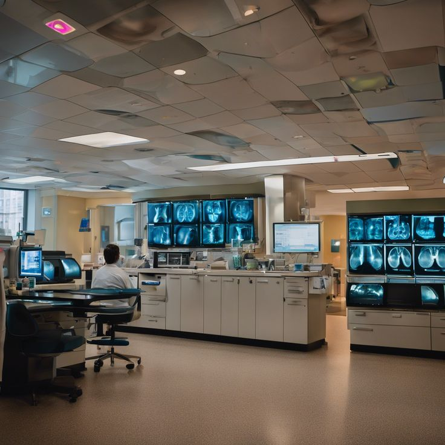
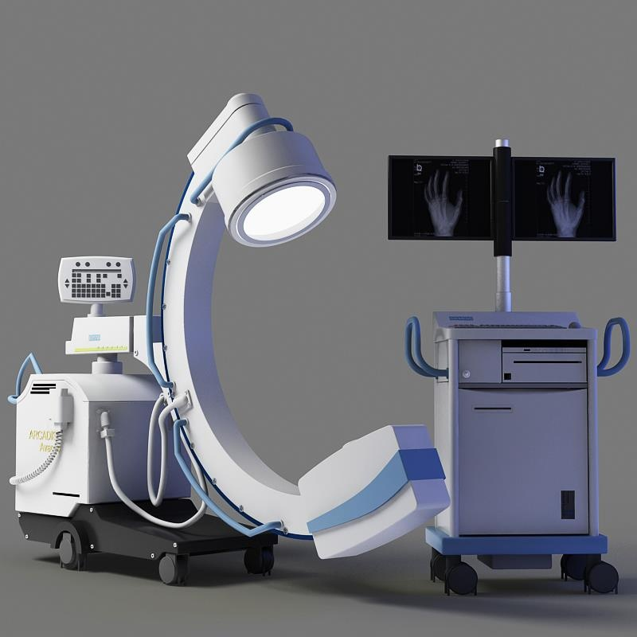

مركز التميز في التصوير الطبي
يقدم قسم الأشعة في مركز ميديكير أحدث تقنيات التصوير التشخيصي بدقة عالية، مع الالتزام بأعلى معايير السلامة للمرضى والعاملين.
أجهزة متطورة
أحدث أجهزة التصوير بالرنين المغناطيسي، الأشعة المقطعية، الموجات فوق الصوتية والأشعة السينية الرقمية
فريق متخصص
أطباء أشعة معتمدين وفنيون متخصصون بخبرات تصل إلى 20 عاماً في مختلف مجالات التصوير الطبي
سلامة المرضى
نتبع بروتوكولات صارمة للحد من التعرض للإشعاع مع مراعاة الحالات الخاصة مثل الحوامل والأطفال
شهادات الاعتماد:




+20
سنة خبرة